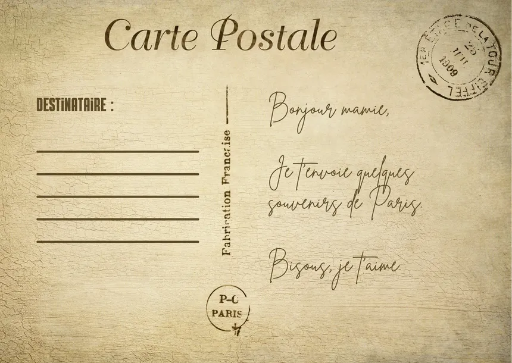

La carte postale
Description :
Le vendredi 11 septembre 1942 les familles juives du Nord et du Pas-de-Calais se retrouvent pour fêter la nouvelle année.Une journée de partage que les Allemands et la police française choisissent pour organiser la rafle la plus importante qu’ait connue la région durant la Seconde Guerre mondiale. 500 à 600 familles juives dans la métropole de Lille sont arrêtées. Des adultes et des enfants menés de force à Malines, en Belgique, dernier arrêt avant Auschwitz.Les premiers juifs faits prisonniers sont acheminés à Lille, dans la gare de Fives, pour attendre les convois en provenance du Bassin minier. Lors de cette arrestation plusieurs personnes ont aidé à la fuite de certains Juifs. C’est l’un des plus grands sauvetage de la Seconde Guerre mondiale. Au moment du départ, le père écrit à sa fille, Margot, restée à Lille pour ses études, une carte postale. Un cheminot la retrouve et la poste.
